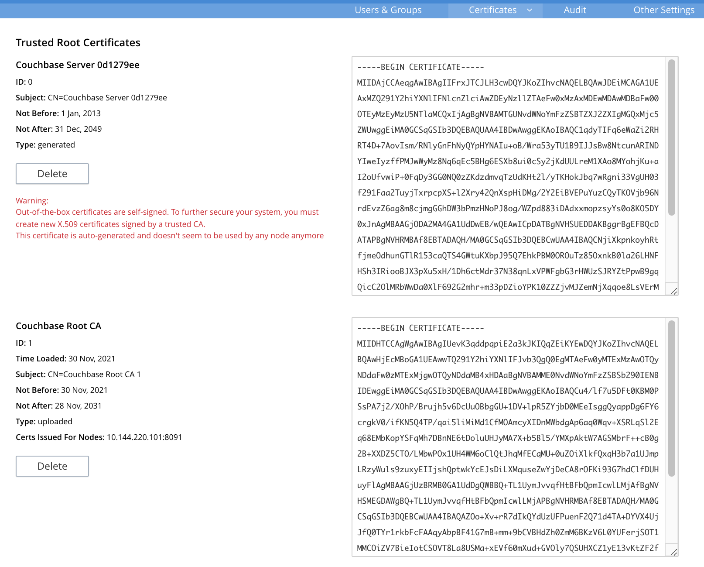

Configure Server Certificates
Couchbase Server Enterprise Edition supports using X.509 and PKCS #12 certificates for authenticating and encrypting data between the nodes in the cluster.
This page explains how to configure server certificates for Couchbase Server Enterprise Edition. For an overview of how Couchbase Server uses certificates, see Certificates.
The procedures in this page are only limited examples. They cover the basic steps for creating certificates. When creating and deploying certificates for your own database, you often have to modify these steps to suit your environment.
This page gives detailed steps to configure X.509 certificates on a Linux-based single node Couchbase Server. It demonstrates two scenarios. The first shows directly signing the node’s certificate using the root certificate. The second shows creating an intermediate certificate from the root certificate and using that to sign the node’s certificate.
This page also explains how you can bundle certificates, private keys, and certificate chains into a single Public-Key Cryptography Standard (PKCS) #12 certificate file. Couchbase Server supports using this type of file to upload node certificates.
| Once you deploy cluster and node certificates to a database, you must create additional node certificates for any new nodes you add later. See Adding New Cluster Nodes for details. |
Create and Deploy Cluster and Node Certificates
The following procedure shows how to create a self-signed root certificate for a single-node database. It then demonstrates using that certificate to sign a node certificate. The steps for a multi-node cluster are similar, as explained at the end of the example.
-
Open a command line shell on the node.
-
In some directory (such as your home directory or
/tmp) create working directories:mkdir servercertfiles cd servercertfiles mkdir -p {public,private,requests}In this example, each directory has a different purpose:
-
The
publicdirectory stores certificates, which contain public keys. -
The
privatedirectory contains private keys. -
The
requestsdirectory stores certificate signing requests.
-
-
Create a private key for the cluster:
openssl genrsa -out ca.key 2048The output of this command,
ca.key, is the private key for the cluster. -
Create the certificate (the file that contains the public key) for the cluster:
openssl req -new -x509 -days 3650 -sha256 -key ca.key -out ca.pem \ -subj "/CN=Couchbase Root CA"The arguments to this command are:
-
-x509: generates an X.509 format certificate. -
-days 3650: the number of days before the certificate expires. -
-sha256the hashing algorithm to use for the digital signature. -
-key ca.key: sets the private key file the certificate is based on to the private key you created in the previous step. -
-out ca.pem: the filename for the certificate. -
-subj "/CN=Couchbase Root CA": the/CN=portion of the argument sets the common name of the certificate’s issuer toCouchbase Root CA. This name identifies the certificate as the root certificate for the Couchbase Server cluster.
-
-
Optionally, you can review the content of the certificate you just created using the command:
openssl x509 -text -noout -in ./ca.pemThe following is an example of the first part of the output:
Certificate: Data: Version: 3 (0x2) Serial Number: 18276610881715621025 (0xfda390c366b2cca1) Signature Algorithm: sha256WithRSAEncryption Issuer: CN=Couchbase Root CA Validity Not Before: Sep 2 08:32:31 2019 GMT Not After : Aug 30 08:32:31 2029 GMT Subject: CN=Couchbase Root CA Subject Public Key Info: Public Key Algorithm: rsaEncryption Public-Key: (2048 bit) Modulus: 00:d7:a6:ba:5d:e2:e2:fd:6e:1b:33:9a:4b:bf:77: 6f:28:c3:37:60:33:da:09:b2:0b:73:1f:f9:65:2a: . .For detailed information about keys and key generation, see RSA (cryptosystem).
-
Create a private key for the node. Each node in the cluster needs its own private key and certificate. Couchbase Server requires that you name the file containing the private key
pkey.key. However, if you’re creating private keys for multiple nodes, you’ll need to give them unique filenames to avoid them overwriting each other. This example gives it a unique name, which you’ll need to change when you deploy the private key to the node.The command to create a private key is:
openssl genrsa -out private/couchbase.default.svc.key 2048 -
Create a Certificate Signing Request (CSR) for the node certificate:
openssl req -new -key private/couchbase.default.svc.key \ -out requests/couchbase.default.svc.csr -subj "/CN=Couchbase Server"This step prepares the request you use to sign the node’s certificate with the cluster’s private key and certificate later.
-
Create a file that contains the certificate extensions that all nodes have in common. These extensions define constraints on how a certificate can be used. For detailed information about certificate extensions, see the Standard Extensions section of the Internet X.509 Public Key Infrastructure Certificate and Certificate Revocation List (CRL Profile). You submit the extensions to the signing CA, along with the CSR you generated in the previous step. The next step adds information specific to an individual node.
Use this command to create the certificate extension file:
cat > server.ext <<EOF basicConstraints=CA:FALSE subjectKeyIdentifier = hash authorityKeyIdentifier = keyid,issuer:always extendedKeyUsage=serverAuth keyUsage = digitalSignature,keyEncipherment EOFThe extensions in this file are:
-
basicConstraints=CA:FALSE: the certificate generated from the CSR cannot be used to issue other certificates. -
subjectKeyIdentifier = hash: the Subject Key Identifier (SKI) is derived form a hash of the public key in the certificate. -
authorityKeyIdentifier = keyid,issuer:always: specifies how to generate Authority Key Identifier (AKI). Thekeyidtells the certificate signing process to generate the AKI from the issuer’s public key (the cluster’s public key, in this example). Theissuer:always: means that the signing process always includes the issuer’s distinguished name (DN)in the AKI. -
extendedKeyUsage=serverAuth: means that the purpose of the certificate being signed is for server identification. -
keyUsage: limits how the private key can be used. The valuesdigitalSignature,keyEnciphermentmean you can use the private key for digital signatures and for encipherment. Encipherment means that the key’s primary use is to encrypt session or symmetric keys, but it can also be used for direct data encryption.
-
-
Create a customized version of the certificate extensions file that contain settings specific to the node:
cp ./server.ext ./server.ext.tmp echo "subjectAltName = IP:10.143.192.102" \ >> ./server.ext.tmpThis command copies the file created in the previous step and adds a
subjectAltNameextension that identifies the node. This example uses the node’s IPv4 address. This extension makes sure the node’s certificate is valid for just the specific node. No other node or client can use the certificate. If your cluster uses DNS names to identify nodes, you must use the node’s DNS name, such asDNS:node2.cb.cominstead of its IP address.Couchbase Enterprise Server requires that the node’s certificate identifies the node in a Subject Alternative Name extension. Without this identification, Couchbase Server reports an error when you upload the certificate to the node or when you try to add the node to the cluster. For more information, see Node-Certificate Validation. -
Create the node’s certificate by signing it with the certificate and digital signature of the CA. In this example, the CA is the root certificate created earlier. Therefore, the command to sign the node’s certificate uses the
ca.pemandca.keyfiles:openssl x509 -CA ca.pem -CAkey ca.key -CAcreateserial -days 365 -req \ -in requests/couchbase.default.svc.csr \ -out public/couchbase.default.svc.pem \ -extfile server.ext.tmpThe arguments to this command are:
-
x509: specifies thatopensslis working with an X.509 certificate. -
-CA ca.pem -CAkey ca.key: tellsopensslto use the key and certificate created in steps 1 and 2 as the CA. -
-CAcreateserial: tellsopensslto create a serial number file if it does not already exist. It then writes the serial number it assigns to the certificate to this file. The serial file records the serial numbers of all the certificatesopensslcreates to make sure each certificate it creates has a unique serial number. -
-days 365: sets the number of days before the certificate expires. -
-req: tellsopensslthat you want to read a CSR to perform a certificate signing. -
-in requests/couchbase.default.svc.csr: hasopensslread the CSR created in step 6. -
out public/couchbase.default.svc.pem: tellsopensslsets where to save the signed node certificate. -
-extfile server.ext.tmp: tellsopensslto read the extensions file created in step 9.
The file generated by this command,
couchbase.default.svc.pem, is the node’s certificate.The output of running the previous command looks like this:
Signature ok subject=/CN=Couchbase Server Getting CA Private Key -
-
Before you can deploy the key private key and the certificate to the node, you must rename their files. Couchbase Server requires that these files have specific filenames. Rename the certificate file to
chain.pemand the private key file topkey.key:cd ./public mv couchbase.default.svc.pem chain.pem cd ../private mv couchbase.default.svc.key pkey.keyIn this example you could just have openssloutput the correct filenames in steps 5 and 9. In production, you often create certificates for multiple nodes at the same time, and so need to give each file a unique name. -
If the node to which you’re deploying the certificate does not have an inbox directory, create it. The inbox directory is where Couchbase Server looks for certificate, key, and related files. See Load Root Certificates for a list of the inbox paths on all platforms. On Linux, this directory is
/opt/couchbase/var/lib/couchbase/inbox/.sudo mkdir /opt/couchbase/var/lib/couchbase/inbox/ -
Copy the node certificate and node private key by copying them to the
inboxdirectory.cd .. sudo cp ./public/chain.pem /opt/couchbase/var/lib/couchbase/inbox/chain.pem sudo cp ./private/pkey.key /opt/couchbase/var/lib/couchbase/inbox/pkey.keyThis example has a single node, so you created the node’s certificate on the node where you’ll deploy it. Therefore, you can just copy the files into the correct directory using cp. When creating certificates for multiple nodes, you must move the files to the node’s filesystem to deploy them. If you created all of the certificates on one node, you can use a command such asscpto copy the files from that node to the node the certificate is for. Remember to create theinboxdirectory on each node as well. -
Deploy the root certificate. Couchbase Server expects to find the root certificate in a subdirectory named
CAin theinboxdirectory. Create the subdirectory and then copy the root CA file:sudo mkdir /opt/couchbase/var/lib/couchbase/inbox/CA sudo cp ./ca.pem /opt/couchbase/var/lib/couchbase/inbox/CA/. -
Make all files in the
inboxdirectory readable by just thecouchbaseuser:sudo chown -R couchbase /opt/couchbase/var/lib/couchbase/inbox/* sudo chmod -R 0700 /opt/couchbase/var/lib/couchbase/inbox/* -
Call the REST API to have Couchbase Server load the root certificate for the cluster:
curl -X POST http://10.143.192.102:8091/node/controller/loadTrustedCAs -u Administrator:password -
Optionally, verify that Couchbase Server has added the new root CA to its trust store:
-
Sign into the Couchbase Server Web Console as a Full Administrator.
-
Click Security, and click Certificates
In this example, you can see both the original automatically generated root certificate and the newly uploaded certificate. The original generated root certificate appears at the top.
You cannot delete a certificate if it has signed one or more node certificates that are in use in the cluster. You can only delete the old autogenerated certificate after you have deployed new node certificates signed by the new root CA to each node. For more information about the Certificates tab on the Security screen, see Certificates.
-
-
Load the node certificate and its private key by calling the reloadCertificate REST API:
curl -X POST http://10.143.192.102:8091/node/controller/reloadCertificate -u Administrator:passwordThe node certificate is now activated for the current node, bearing the authority of the root CA.
For more information using the REST API to manage certificates, see Certificate Management API. This includes details on retrieving root and nodes certificates that have been uploaded, and on certificate deletion.
This example demonstrated configuring certificates for a single node database.
To deploy certificates for a multi-node cluster, repeat steps 6, 7, 9, 10, 11, 12, 15, and 18 for each node.
Remember that you must copy the node’s certificate and key files to its own inbox directory to deploy them.
Create and Use Intermediate Certificates to Sign Node Certificates
The previous example directly signed node certificates using the root certificate. In some cases, you may want to use an intermediate certificate to sign the certificates for the nodes. The primary reason to use an intermediate certificate is to prevent exposing the cluster’s private key.
For example, you may want to delegate the signing of node certificates. By creating an intermediate certificate, you can keep the cluster’s private key secret while allowing others to sign node certificates. The administrators to whom you delegate the signing of node certificates can use the intermediate certificate for signing. They do not need use to the cluster’s private key to sign the node certificates.
For more information, see Adding Intermediate Certificates to the Trust Store.
When a peer (such as another node or a client) attempts to connect to a node securely, it uses the node’s certificate to verify the node’s identity. The node can supply a chain of certificates to the peer in addition to its own. To verify the node’s identity, the peer searches for a CA it trusts in the chain of certificates from the node. See Intermediate Certificates for more information.
In Couchbase Server you can supply the peer with the chain of trust it needs to identify the node in one of two ways:
-
Concatenation of all intermediate and node certificates into a single
chain.pemfile, which you deploy to the node. The node provides this entire chain of trust to the peer when it tries to connect securely. -
Deploy a
chain.pemfile containing just the node’s certificate. In this case, the peer’s trust store must already have all intermediate certificates that it needs to verify the node’s identity.
The following examples demonstrate both of these methods. They assume that you have already completed the steps in Create and Deploy Cluster and Node Certificates.
Deploy an Intermediate Certificate as Part of the Node’s Trust Chain
This example demonstrates creating root, node, intermediate, and client certificates. It Concatenates these certificates together so the node can provide the client a complete chain of trust.
-
Open a command line shell on the node for which you want to create a certificate signed by an intermediate certificate.
-
In some directory, such as your home directory or
/tmp, create working directories:mkdir servercertfiles2 cd servercertfiles2 mkdir -p {root,servers,clients}/{issued,reqs,private}You’ll use the
root,servers, andclientsdirectories to contain the certificates, requests, and private keys for the root, node, and client certificates. Theissued,reqs, andprivatesubdirectories in these directories will contain the final certificates, the signing requests, and the private keys respectively.The example Client Access: Intermediate Certificate Authorization uses this directory structure. It demonstrates creating the certificates that the clients need. -
Change to the
rootdirectory and create a configuration file for the root certificate:cd root cat > config <<EOF [req] distinguished_name = cn_only x509_extensions = ca_ext [ cn_only ] commonName = Common Name (eg: your user, host, or server name) commonName_max = 64 commonName_default = CA [ca_ext] basicConstraints = CA:TRUE subjectKeyIdentifier = hash authorityKeyIdentifier = keyid:always,issuer:always keyUsage = cRLSign, keyCertSign EOFThe
configfile has three sections:-
[req]specifies the values to pass to thereqcommand. This command creates and processes certificate requests. To learn more about it and its arguments, use the commandman req. -
[cn_only]provides specifications for the Common Name to used in the certificate, including the maximum number of characters and the default name. -
[ca_ext]provides basic extensions that limit the capability of the certificate. Some of the settings in this section are:-
basicConstraints CA:TRUEmakes the certificate capable of signing other certificates. -
keyUsage = cRLSign, keyCertSignhas two effect. ThecRLSignvalue prevents the certificate’s public key from being able to verify signatures on Certificate Revocation Lists. AndkeyCertSignmakes the certificate’s public key able to verify signatures on other certificates.
-
-
-
Create the root certificate, passing in the
configfile you just created:openssl req -config config -new -x509 -days 3650 -sha256 -newkey rsa:2048 \ -keyout ca.key -out ca.pem -subj '/C=UA/O=MyCompany/CN=RootCA'This command creates both the root certificate for the cluster in a file named
ca.pemfile, and the private key in a file namedca.key. The-keyoutargument tellsopensslto password protect the private key. When executing the command,opensslprompts you for a pass phrase:Generating a 2048 bit RSA private key ....+++ ...................+++ writing new private key to 'ca.key' Enter PEM pass phrase:Anyone trying to use the certificate’s private key must enter this passphrase.
-
Create an extensions file to limit the capabilities of the intermediate certificate that you create in the next step:
cat > int.ext <<EOF basicConstraints = CA:TRUE subjectKeyIdentifier = hash authorityKeyIdentifier = keyid:always,issuer:always keyUsage = cRLSign, keyCertSign EOFAs with the root certificate configuration, this configuration’s
basicConstraintssetting allows the intermediate certificate to sign other certificates. ItskeyUsagesetting also allows the certificate’s public key to verify its signature on other certificates. -
Create a private key and a corresponding certificate signing request for the intermediate certificate:
openssl req -new -sha256 -newkey rsa:2048 -keyout ../servers/int.key \ -out reqs/server-signing.csr \ -subj '/C=UA/O=MyCompany/OU=Servers/CN=ServerSigningCA'Again, the command requires
opensslto password protect the private key, so it prompts you twice for a pass phrase.The command outputs the encrypted private key in
servers/int.keyand a signing request inroot/req/server-signing.csr. -
Create the intermediate certificate signed by the root certificate
ca.pemand its keyca.key, to establish the intermediate certificate’s authority:openssl x509 -CA ca.pem -CAkey ca.key -CAcreateserial \ -CAserial serial.srl -days 3650 -req -in reqs/server-signing.csr \ -out issued/server-signing.pem -extfile int.extopensslprompts you for the pass phrase for theca.keyprivate key because you password-protected it in an earlier step. The command saves the intermediate certificate asissued/server-signing.pem. -
Make a copy of the intermediate certificate to use as the authority for the node certificates that you create in later steps.
cp issued/server-signing.pem ../servers/int.pem -
Within the
../serversdirectory, create an extension file containing the information that’s common across all nodes in the cluster.cd ../servers cat > server.ext <<EOF basicConstraints = CA:FALSE subjectKeyIdentifier = hash authorityKeyIdentifier = keyid,issuer:always extendedKeyUsage = serverAuth keyUsage = digitalSignature,keyEncipherment EOFSome of the important values in this extension file are:
-
extendedKeyUsage = serverAuthlimits the purpose of the certificate to server authentication. -
keyUsagevaluedigitalSignaturespecifies that the certificate’s public key can be used in the verifying of information-origin. ThekeyEnciphermentvalue allows the public key to encrypt symmetric keys.
-
-
Generate the private key for the node.
openssl genrsa -out private/couchbase.node.svc.key 2048 -
Generate a certificate signing request for the node’s certificate.
openssl req -new -key private/couchbase.node.svc.key \ -out reqs/couchbase.node.svc.csr \ -subj "/C=UA/O=MyCompany/OU=Servers/CN=couchbase.node.svc" -
Create a copy of the file containing the certificate extensions and append a setting specific to the node.
cp server.ext temp.ext echo 'subjectAltName = IP:10.143.192.102' >> temp.extThe newly created
temp.extfile adds the node’s IP address as a Subject Alternative Name to the certificate. In Couchbase Enterprise Server Version 7.2 and later, you must add a Subject Alternative Name to the certifcate which indentifies the node. If the certificate’s Subject Alternative Name does not match the node’s identity in the cluster, Couchbase Server returns an error if you try to load the certificate. For information and options, see Server Certificate Validation. -
Create the node certificate for the node by signing the certification request you just created using the intermediate certificate:
openssl x509 -CA int.pem -CAkey int.key -CAcreateserial \ -CAserial serial.srl -days 365 -req -in reqs/couchbase.node.svc.csr \ -out issued/couchbase.node.svc.pem -extfile temp.extBecause you’re using the intermediate certificate in this signing request,
opensslprompts you to enter the pass phrase for the intermediate certificate’s private key.The command creates the node’s certificate as the file
issued/couchbase.node.svc.pem -
Check that the node certificate is valid. The following use of the
opensslcommand verifies the relationship between the root certificate, the intermediate certificate, and the node certificate.openssl verify -trusted ../root/ca.pem -untrusted int.pem \ issued/couchbase.node.svc.pemThe command outputs the following if the certificate passes the validity check:
issued/couchbase.node.svc.pem: OK
-
Prepare the node’s certificate for upload by creating the
chain.pemcertificate file. You createchain.pemby concatenating the node certificate and the intermediate certificate to establish the chain of authority. Couchbase Server expects the node’s certificate file to be namedchain.pem.cat issued/couchbase.node.svc.pem int.pem > chain.pem -
Create a copy of the node’s private key named
pkey.keyfor deployment to the node. Couchbase Server expects the node’s private key to have this filename.cp private/couchbase.node.svc.key pkey.key -
Move the node certificate and node private key into the
inboxdirectory for the current node.sudo mkdir /opt/couchbase/var/lib/couchbase/inbox/ sudo cp ./chain.pem /opt/couchbase/var/lib/couchbase/inbox/chain.pem sudo cp ./pkey.key /opt/couchbase/var/lib/couchbase/inbox/pkey.key -
Move the root certificate into the
inbox/CAdirectory for the current node.sudo mkdir /opt/couchbase/var/lib/couchbase/inbox/CA/ cd ../root sudo cp ca.pem /opt/couchbase/var/lib/couchbase/inbox/CA/. -
Make all certificate and private key files in the
inboxreadable by thecouchbaseuser.sudo chown -R couchbase /opt/couchbase/var/lib/couchbase/inbox/* sudo chmod -R 0700 /opt/couchbase/var/lib/couchbase/inbox/* -
Upload the root certificate, activating it for the entire cluster.
curl -X POST http://10.143.192.102:8091/node/controller/loadTrustedCAs \ -u Administrator:password -
Upload the node certificate.
curl -X POST http://10.143.192.102:8091/node/controller/reloadCertificate \ -u Administrator:password
For more information using the REST API to manage certificates, see Certificate Management API.
Deploy an Intermediate Certificate via Peer’s Trust Store
The following example creates an intermediate certificate but does not concatenate it with the node’s certificate. After following these steps, any peer attempting to make a secure TLS connection to the node must have the intermediate certificate in its trust store. These peers include clients making secure connections and other nodes in the Couchbase Server cluster. Adding the intermediate certificate to the peer’s trust store makes sure the peer can establish a chain of trust from the node’s certificate to a CA that it trusts.
-
Perform all steps listed in the section Deploy an Intermediate Certificate as Part of the Node’s Chain up to and including step #14, Check that the node certificate is valid.
-
Prepare to deploy the certificate and private key for the node, by renaming both:
cp issued/couchbase.node.svc.pem chain.pem cp private/couchbase.node.svc.key pkey.key
-
Move the renamed node certificate and private key into the
inboxfor the current node.sudo mkdir /opt/couchbase/var/lib/couchbase/inbox/ sudo cp ./chain.pem /opt/couchbase/var/lib/couchbase/inbox/chain.pem sudo cp ./pkey.key /opt/couchbase/var/lib/couchbase/inbox/pkey.key
-
Move the root certificate and the intermediate certificate into the
inbox/CAdirectory for the current node.sudo mkdir /opt/couchbase/var/lib/couchbase/inbox/CA/ # if needed sudo cp int.pem /opt/couchbase/var/lib/couchbase/inbox/CA/. cd ../root sudo cp ca.pem /opt/couchbase/var/lib/couchbase/inbox/CA/.
-
Make sure that all certificate and private key files in the
inboxdirectory can be read by usercouchbase.sudo chown -R couchbase /opt/couchbase/var/lib/couchbase/inbox/* sudo chmod -R 0700 /opt/couchbase/var/lib/couchbase/inbox/* -
Upload the root and intermediate certificates.
curl -X POST http://10.143.192.102:8091/node/controller/loadTrustedCAs \ -u Administrator:password -
Upload the node certificate.
curl -X POST http://10.143.192.102:8091/node/controller/reloadCertificate -u Administrator:passwordWhen the cluster contains more than one node, you must repeat the call to /node/controller/reloadCertificatefor each node. Be sure to use the IP address of each node in the POST URL to have each node reload its certificates. Also, copy the files to the node’s inbox on its own filesystem. The files must be on the node for the REST API call to work.
The node’s certificate is now deployed. Remember that it does not contain the intermediate certificate. For a peer to identify the node, it must have a copy of the intermediate certificate in its trust store. Without it, the peer cannot establish a chain of trust from the node to the root CA. To make sure other nodes in the cluster can identify the node, add the intermediate certificate to the Couchbase Server’s trust store. For other clients, consult their documentation to determine how to add the intermediate certificate to their trust stores.
For more information using the REST API to manage certificates, see Certificate Management API.
Deploy a Certificate and Private Key to a Node in a PKCS #12 File
PKCS #12 format certificates let you bundle certificates, private keys, and other objects into a single file. Couchbase Server supports using PKCS #12 files for deploying certificates, private keys, and certificate chains for nodes. It does not support using them for other purposes, such as client or root certificates.
Couchbase Server requires that the PKCS #12 file be in the node’s inbox directory with the filename couchbase.p12.
The following example demonstrates how to bundle the node’s certificate and private key into a PKCS #12 file and deploy it on a node.
-
Follow steps 1 through 10 in the Create and Deploy Cluster and Node Certificates example. When you complete these steps you’ll have certificates and private keys for the cluster and the node.
-
Bundle the node’s certificate and private key into a single PKCS #12 file:
openssl pkcs12 -export -out couchbase.p12 -inkey private/couchbase.default.svc.key -in public/couchbase.default.svc.pemThe arguments in this command are:
-
pkcs12tellsopensslyou want to work with a PCKS #12 certificate. -
-exporttellsopensslyou want to create a new certificate. -
-out couchbase.p12sets the output filename. The file is saved in the current directory with the name Couchbase Server expects for a PKCS #12 certificate. -
-inkey private/couchbase.default.svc.keytells the command to import the node’s private key from the file you created earlier. It also hasopensslpassword protect the private key. -
-in public/couchbase.default.svc.pemtells the command where to find the node’s certificate.
The command prompts you to enter a password for the private key twice.
-
-
If the node to which you’re deploying the certificate does not have an inbox directory, create it.
sudo mkdir /opt/couchbase/var/lib/couchbase/inbox/ -
Copy the PKCS #12 certificate to the node’s inbox:
sudo cp couchbase.p12 /opt/couchbase/var/lib/couchbase/inbox/Make sure there are no other certificate files in the
inboxdirectory. If Couchbase Server finds both acouchbase.p12andpkey.keyin the inbox directory, it cannot tell which file you intend to use for the certificate. In this case, it returns an error when you try to upload the certificate to the node. -
Deploy the root certificate. Couchbase Server expects to find the root certificate in a subdirectory named
CAin theinboxdirectory. Create the subdirectory and then copy the root CA file:sudo mkdir /opt/couchbase/var/lib/couchbase/inbox/CA sudo cp ./ca.pem /opt/couchbase/var/lib/couchbase/inbox/CA/. -
Make all files in the
inboxdirectory readable by just thecouchbaseuser:sudo chown -R couchbase /opt/couchbase/var/lib/couchbase/inbox/* sudo chmod -R 0700 /opt/couchbase/var/lib/couchbase/inbox/* -
Call the REST API to have Couchbase Server load the root certificate for the cluster:
curl -X POST http://10.143.192.102:8091/node/controller/loadTrustedCAs -u Administrator:password -
Load the node certificate and its private key by calling the reloadCertificate REST API. Because an earlier step password protected the private key, you must pass the password for it as an argument to the REST API call:
curl -X POST http://10.143.192.102:8091/node/controller/reloadCertificate \ -u Administrator:password -d '{"privateKeyPassphrase": {"type": "plain", "password": "private-key-password"}}'The JSON value you pass to the command supplies the password for the private key in the PKCS #12 certificate as plain text. Replace the
private-key-passwordwith the password you entered in step 2.This example sends the private key’s password in plaintext for simplicity. In a production environment, consider using a more secure method of sending this password. See JSON Passphrase Registration
Couchbase Server extracts the private key and certificate from the couchbase.p12 file and activates them on the node.
This example has the node’s certificate directly signed by the root certificate.
If instead you need to use one or more intermediate certificates to sign the node’s certificate, you can choose to include them to establish a chain of trust.
You can include a chain of intermediate certificates by adding a -chain argument to the openssl command in step 2.
See OpenSSL’s openssl-pkcs12 documentation for documentation on -chain and other arguments.
Encrypted Node Private Keys
You can choose to encrypt the private key for nodes when uploading them. You must register the passphrase so that the key can be securely retrieved and used when required. See Upload and Retrieve a Node Certificate for details.
Configuring Client Access
Once you have configured root, intermediate, and node certificates for the cluster, you can create client certificates so clients can securely connect. You can choose to create an intermediate client certificate that itself inherits the authority of the root. Client-certificate preparation varies, depending on the type of client. For steps to prepare a client certificate to support connections between Couchbase Server databases, see Client Access: Intermediate-Certificate Authorization. For steps to prepare a certificate for a Java client, see Java Client Access: Intermediate-Certificate Authorization.
| Client connections secured by client certificate must be enabled on the cluster. See Enable Client-Certificate Handling. |
Using an Externally Provided Root Certificate
The examples in this page create a self-signed root certificate and use that certificate’s private key to sign other certificates. In production environments, you often want to use a node certificate signed by a well-known Certificate Authority. In this case, the CA provides the root, intermediate, and node certificates for you. The intermediate certificate is optional.
Adding and Joining New Nodes
When a cluster uses the default auto-generated certificates, you do not need to generate a new certificate for new nodes. Once you configure the cluster to use custom certificates, you must generate a new certificate when adding or joining new nodes to the cluster. In Couchbase Server always adds or joins new nodes over an encrypted connection.
When a cluster using custom certificates adds or joins a new node to itself, the new node must interact with an existing node. This interaction requires both the existing node and new node verify each other’s identity using their chains of trust. The easiest way to make sure the nodes can identify each other by signing them with the same root certificate or the same intermediate certificate. Otherwise, make sure each node’s trust store contain the intermediate or CA that signed the other node’s certificate.
Re-Adding Node
When you remove a node from a cluster, Couchbase Server deletes its configuration including its certificates chains. If you add the removed node back to the cluster, Couchbase Server adds it as a new node with a new configuration. Therefore, you must make sure node has the appropriate root certificate and chain certificate.
For more information about removing nodes, see Removal.
Regenerating Default Certificates
When it creates the cluster, Couchbase Server generates default certificates for the cluster and initial node. It also generates certificates for additional nodes you add later. You can have Couchbase Server regenerate the certificates using a the REST API call. This call has Couchbase Server generate a new self-signed root certificate and add it to its trust store. It then creates new node certificates signed by the new root certificate, overwriting existing node certificates. Any old auto-generated and custom root certificates remain in the cluster’s trust store.
For information about regenerating certificates, see Regenerate All Certificates. For information about deleting root certificates, see Delete Root Certificates.
Further Information
For information about certificate-management using the REST API, see ssl-manage and Certificate Management API.
For step-by-step instructions on creating client certificates, see Configure Client Certificates.
For an example of using node and client certificates to secure XDCR replication between clusters, see Specify Root and Client Certificates, and Client Private Key.